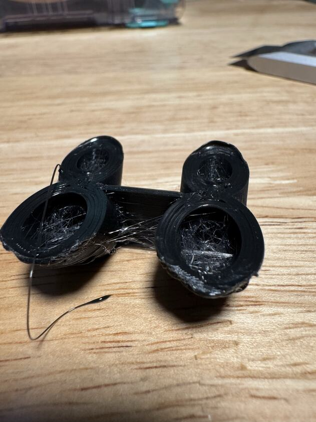

Strings
The nozzle goes around. The string goes straight.
Soft TPU never quite stops coming out. When the nozzle stops printing and moves, a thread stays attached where it left off and follows. Sending the nozzle the long way round, over the walls, does nothing. The thread is not on that route. It is pulled tight between its two ends.
Seen in TPU 85A, both brands · Mark 1 and Mark2 · right 0.6 mm nozzleNot tried in: PET-GF or PETG, which do not string like this here

“…if you stop printing and you travel south and then you travel east, you end up drawing a diagonal thread in the southeast direction.”
78 of 118
rerouted moves in that file could still pull a thread across a bore, though the nozzle stayed over plastic on every one.
0 of 6,118
in the reworked file. No retraction and no Z-hop anywhere in the part.
22 October 2026, Mark2, Siraya TPU 85A: “That worked very well. I see no strings, and seal seems as good as before.”
Still openThe clean print also changed the brand of TPU. The reworked path has not yet been run on the first brand.